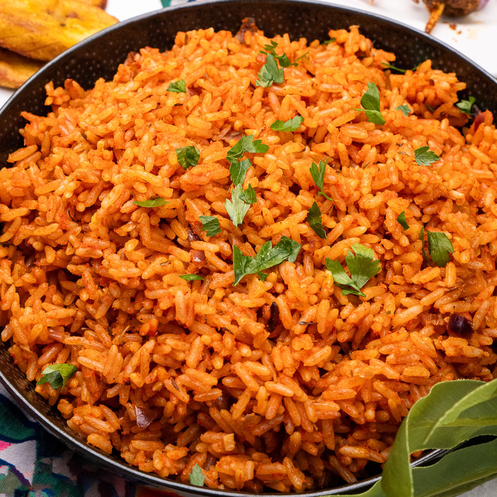
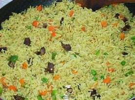
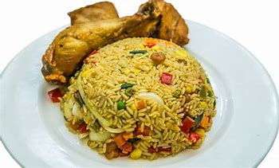
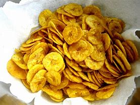

Jollof Rice

Jollof rice is bold,deeply red, and explodes with flavor. Mostly eaten in West Africa i.e Nigeria , Ghana etc...
Jollof Rice Recipes
There are hundreds of different dishes in the world, but there is only a handful that has enough flavor for me to eat alone.A bowl of jollof rice is one of those dishes.jollof is a staple in west african cuisine. it's made from rice,tomatoes,onions,peppers,and other seasonings.
Ingredients used to make jollof
Preparation Process
Nigerian Fried Rice

Nigerian Fried Rice is a dish of cooked rice that has been stir-fried in a work or frying pan and is usually mixed with other ingredients such as beef liver ,seafoods,oil etc. Nigerian Fried Rice is one of the most delicious and easiest nigerian dishes.It is a common dish at parties/occasions in Nigeria. it is also common in Nigeria parties in disapora. 
Nigerian homes and abroad cherish this special delicacy so much alongside jollof rice which is loved and eaten all over West Africa. Most homes always have it in menu list on special occasions like family get together,weddings and also Christmas celebration.
To grab the full recipe and cooking instructions Click this link
★ ★ ★ ★ ☆Bobotie

Bobotie is a delicious South African dish consisting of spiced minced meat baked with an egg-based topping.It was often adopted by the cape malay community. it's a marriage of cuisines born in Cape Town. The baked minced meat comes from Europe similar to mousaka, and the spices from historically malayand indian influence.Hence,the cuisine,cape malay.
★ ★ ★ ★ ☆ Check recipePlantain Chips

Plantain chips are crunchy,crispy fried or baked plantains.This mouth watering chips is popular all over the world. Plantain chips are crunchy,savory.Plantain chips has a similar texture to that of tortilla chips but with plantain flavor.the crunchy and mouth watering taste is so yummy.
Semo and Egusi

Semo is a delicious food consumed mostly in Nigeria especially the yoruba tribe with the mouth watering egusi soup. Semo is a Nigerian swallow eaten with various soups,such as egusi soup,okro soup,efo riro,ogbono etc...
★ ★ ★ ★ ★ Check Recipe